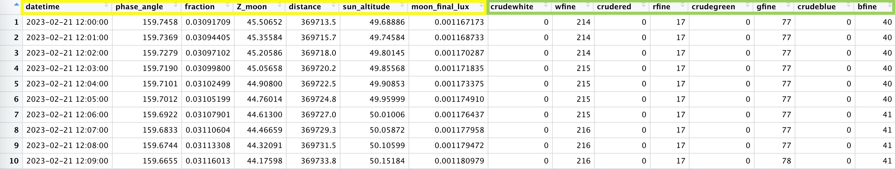
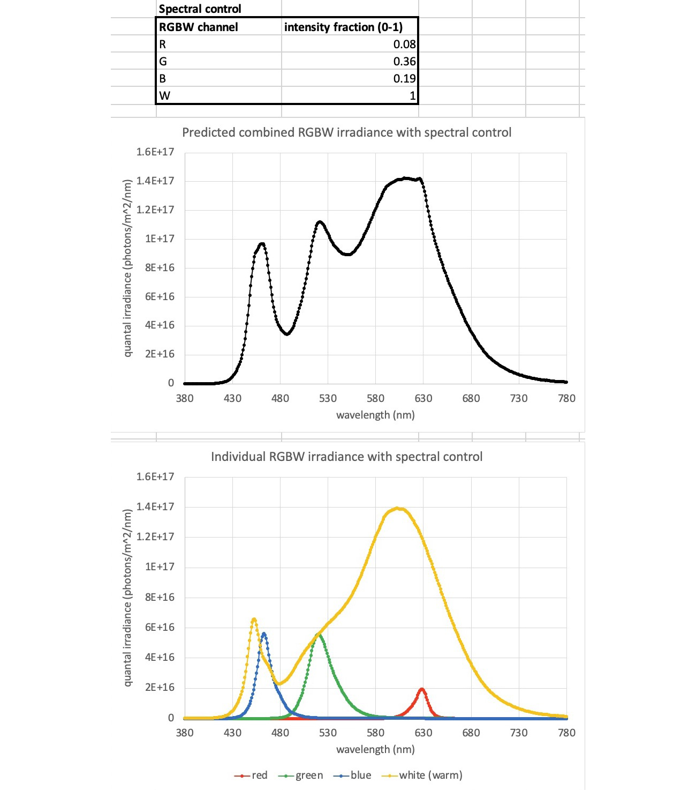
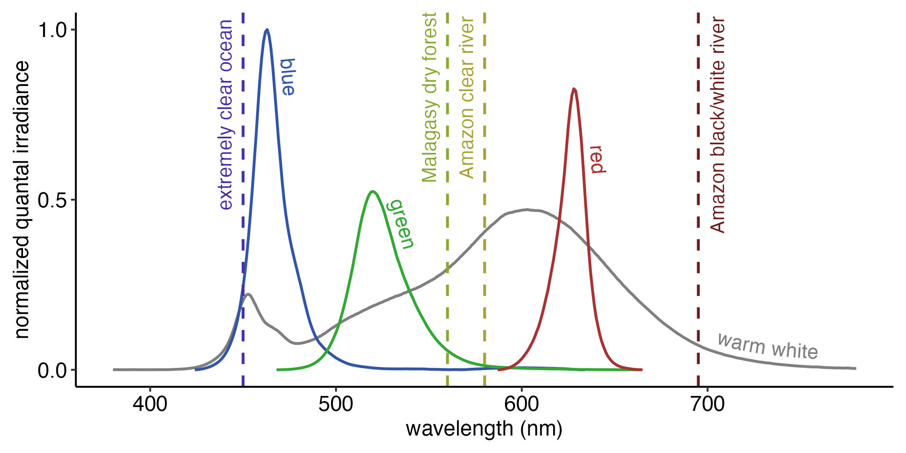

MoonShineR: Moonlight scheduler is a R script designed to be used in conjunction with MoonShineP to re-create moonlight cycles in the lab.
MoonShineR: Moonlight scheduler runs the same set of calculations as MoonShineR: R package to predict moonlight illuminance. However, unlike the R package, the output table LED_schedule_moon.csv contains lists of LED intensity values over time. The interval between successive LED intensity values is constrained to one minute (i.e., the LED intensities are refreshed every minute).
Download MoonShineR: Moonlight scheduler in Download files.
Re-create a realistic moonlight cycle in a laboratory or other indoor environment.
Allows users to specify a geographical location and time period so that the re-created moonlight reflects real nightly, monthly, and seasonal changes.
Provides option to simulate the obstruction of moonlight by surrounding objects (e.g., mountains, trees)
Provides option to simulate light attenuation caused by clouds, with the ability to fine tune the cloud behavior in a stochastic model.
Provides option to adjust the LED light spectrum by controlling the relative intensity of each RGBW channel. This can be useful in approximating the color shift of certain habitats (e.g., the blue shift in deep clear ocean or lake water, or the red shift of sodium vapor street lighting).
library(suncalc) Calculates astronomical variables given a time and location, including moon phase, moon altitude, sun altitude, and the moon to Earth distance.
library(dplyr) Facilitates data wrangling.
library(rpmodel) Calculates atmospheric pressure at a given site elevation.
library(lubridate) Makes datetime format easier to work with.
library(REdaS) Converts between degree angle and radian.
library(npreg) Fits smoothing splines.
library(ggplot2) Create plots.
library(beepr) Makes a notification sound.
library(progress) Display a progress bar of the computation progress.
Tip
This website R Coder is a good resource for learning basic R functions. Start here if you are completely new to R and need instructions on how to load R, set the working directory, install packages and run code.
Below is a summary of the main steps required to run MoonShineR: Moonlight scheduler. The code itself is also commented. The “(!)” symbol denotes a line where the user must enter information.
Set the working directory. This is where the .csv (schedule file) and .png (illuminance ~ time) plot are saved.
setwd("/Users/lokpoon/Desktop")# (!)
Set the geographical location for the simulation.
latitude<--4.21528# (!) Latitude in decimal degrees (e.g., -4.21528)longitude<--69.94056# (!) Longitude in decimal degrees (e.g., -69.94056)
Set the site elevation in m above mean sea level.
site_elev<-0# (!) site elevation in meters (e.g., 0 = sea level)
Tip
This website dcode.fr can be used to determine elevation for a specific geographical coordinate, by accessing NASA Shuttle Radar Topography Mission databases.
Set the time zone.
time_zone<-"EST"# (!)# For a list of time zone names, enter OlsonNames(tzdir = NULL) in R console
Set the starting date, starting time, and simulation duration in days.
date_start<-"2022-07-26"# (!) Starting date of the simulation (YYYY-MM-DD)time_start<-"18:00:00"# (!) Starting time of the simulation (hh:mm:ss)duration_day<-29.5# (!) Duration of simulation in days
Set the simulation time interval to 1 (i.e., the temporal resolution). The time_interval_minutes is constrained to 1 and cannot be changed.
time_interval_minutes<-1# (!) The temporal resolution in minutes
Decide whether to change the default darksky_value, a constant value that is added to moonlight illuminance for representing starlight and airglow (Hänel et al. 2018); Hänel et al. (2018) report starlight and airglow to vary between 0.0006 and 0.0009. Leaving it at the default of 0.0008 lx means that even when the moon is below the horizon, the LED array will still light up to re-create 0.0008 lx (Fig. 5). Otherwise, the darksky_value should be set at zero if the user wishes the room to be completely dark when the moon is below the horizon.
darksky_value<-0.0008# (!) Choose from between 0.0006 to 0.0009. Default = 0.0008
Fig. 5 Photograph of a SK6812 RGBW LED strip at low illuminance. When the LED arrays re-create illuminance near the lower limit, for example at the 0.0008 lx of combined starlight and airglow, the arrays appear to have “color banding”. This is because at this illuminance, the LED is still applying the RGBW channel fractions (step 5). This is normal. After the light has been diffused by the lightbox, it will result in ambient lighting with uniform color.#
theoretical_max<-0.4# (!) Define an intensity upper limit (in lux)
Specify the number of LEDs per SK6812 LED strip and the number of daisy-chained strips.
diode_per_strip<-144# (!) Number of LEDs per stripstrip_count<-2# (!) Number of daisy-chained LED strips
Determine the LED color spectrum by specifying the intensity output (0-1) of each RGBW channel, a feature termed “spectral control”. To approximate a natural moonlight spectrum, leave this setting at the default values shown below (Fig. 6). Note that these default values are intended for the warm white SK6812 LED strips made by BTF lightning. (see Materials).
Fig. 6 A comparison of the moonlight and LED lightbox spectral irradiance. RGBW intensity fraction are set here to the default values. R = 0.08, G = 0.36, B = 0.19, W = 1.0.#
Go to RGBW spectral control for details on how to adjust the RGBW intensity output for approximating the spectral-shift characteristics of certain habitats.
Specify whether to re-create the effect of surround tall objects blocking moonlight. We refer to this phenomenon as the “horizon obstruction”, for example when distant tree canopy or mountain range obscure a rising/setting moon near the horizon. Recreating this phenomenon might re-create a more realistic light scenario for the captive animal. See Horizon obstruction for more details.
horizon_option<-FALSE# (!) TRUE to enable
Specify whether to re-create the light attenuation by a changing cloud cover regime. See Cloud cover simulation for more details.
cloud_option<-FALSE# (!) TRUE to enable cloud simulator
Run the code in the section “START OF ILLUMINATION COMPUTATION” through to “END OF ILLUMINATION COMPUTATION”.
Generate a moon schedule file LED_schedule_moon.csv by running the codes in the section of “GENERATE LED_schedule_moon.csv” (Fig. 7). And plot (See Steps 10-12 in 1. MoonShineR: R package)

Fig. 7 Dataframe of LED_schedule_moon.csv file in R. The columns with green-highlighted headers are the RGBW intensity values that MoonShineP read to generate illuminance. The columns with yellow-highlighted headers are also generated by MoonShineR - R package. This tabulated information is exported to the .csv file, which is read by MoonShineP. Right click and select ‘Open image in new tab’ to enlarge figure.#
Save a LED_schedule_moon.csv, containing the LED intensity values over time.
Finally, the section of code depicted below checks if you have any lunar eclipse events within your simulation.
if (any(abs(moon_value_table$phase_angle) < 1.5 & moon_value_table$sun_altitude < 0)) { # eclipse defined as a moon with phase angle < 1.5 during nighttime
print("ECLIPSE IN SIMULATION!!!")
eclipse_list <- (abs(moon_value_table$phase_angle) < 1.5 & moon_value_table$sun_altitude < 0)
moon_value_table[which(eclipse_list == TRUE),]
} else {
print("no eclipse in simulation")
}
If there is no eclipse, a “no eclipse in simulation” message will appear in the R console after the simulation is complete.
If there is an eclipse, “ECLIPSE IN SIMULATION!!!” will appear in the console. MoonShineR will also report a list of all time intervals affected by both the penumbral and umbral stages of the eclipse (Fig. 3). Note that MoonShineR does not simulate the transient reduction in illuminated fraction or moonlight illuminance during a lunar eclipse (these variables will therefore be incorrectly reported reported by MoonShineR during the event).
Fig. 8 Running a MoonShineR simulation during an eclipse will return a warning message and a list of the minutes of the eclipse event.#
MoonShineR: Moonlight scheduler does not re-create spectral changes associated with variation in the moon altitude; these are negligible. In other words, moonlight is re-created with a constant spectrum, regardless of moon altitude.
Certain habitats are characterized by unique wavelength-dependent attenuation, which researchers may consider emulating. MoonShineR Moonlight scheduler provides the option to adjust the relative intensity of the RGBW channels (Fig. 10).
Adjusting the RGBW spectrum requires the user to have a profound understanding of the spectral characteristics of their habitat target, and the visual sensitivity of the subject animal(s). This is, in part, because the RGBW channels have a very specific and limited peak and spectral range when compared to the complex spectral properties of natural habitats. Consequently, some habitat light spectrum approximations would be more realistic (e.g., when the habitat”s spectral peak corresponds to one of the RGBW peaks), while other approximations might be unsatisfactory.
Knowing the animal’s spectral sensitivity can help to assess the validity of a re-created LED spectrum. For example mammals do not see UV light, so the lack of UV in warm white SK6812 LED strips does not constitute a limitation. However, this might not be the case for animals with UV sensitive vision (including many invertebrates and some vertebrates).
If the user has a spectrometer, they should specify the RGBW intensity fraction in MoonShineR: Moonlight scheduler and measure the resulting overall LED spectral irradiance.
If the user does not have a spectrometer, they should use the provided Microsoft Excel spreadsheet RGBW_LED_spectrum.xlsx (download in Download files) to predict the resulting overall LED spectral irradiance (Fig. 9).

Fig. 9 Using the provided Excel spreadsheet RGBW_LED_spectrum.xlsx to visualize how the overall LED light spectrum will be based on the specified intensity fraction. The user can modify the RGBW intensiy fractions shown in the upper panel (here shown with default values), and the lower two plots will reflect the changes. The middle plot is the predicted overall spectral irradiance of the LED light. The bottom plot shows the contribution of the individual RGBW channels, which were summed together to produce the middle plot.#

Fig. 10 A comparison of the spectra of the unadjusted RGBW channels of the SK68212 LED array to the peak spectral wavelengths of four strongly color-shifted habitats. This plot compares the spectra of the LED RGBW channels to a few habitats with strong spectral shifts. Here, the RGBW channels are all set to the maximum intensity in MoonShineR (i.e., R = 1.0, G = 1.0, B = 1.0, W = 1.0). Note that at the same intensity level, the RGBW channels each have a peak at a different absolute irradiance level (e.g., blue is stronger than green). The dotted line indicates the spectral peaks of four distinctive habitats (clear ocean [Jerlov, 1976], forest understory [Veilleux & Cummings et al, 2012],high-transparency clearwater Amazon rivers, tannin-stained blackwater Amazon rivers, and turbid, tannin-stained whitewater Amazon river [Costa et al., 2013]). The spectral peak of the clear ocean and blue channel are close, while the far red peak of the tannin-stained river cannot be re-created accurately by the red or white channels. These peaks are, of course, an oversimplified representation of the habitats’ spectra; the user should always refer to the complete spectral irradiance plot for a given habitat. Ideally, the user should make their own spectral irradiance measurements at their study site since the spectral properties of the same habitat type (e.g. clearwater river) can still vary greatly (Johnsen, 2012).#
Horizon obstruction automatically applies to all nights, since it is a topographical feature that is constantly present at the location. The obstruction is also assumed, for the sake of simplicity, to be present in all directions, and therefore will affect both the moonrise and moonset.
There are three settings that modify the behavior of horizon obstruction (Fig. 11):
Note
(*) The angular altitude refers to the angle above the horizon, from 0 degrees at the horizon to 90 degrees at the zenith.)
horizon_transition_end<-57# (!) angular altitude* ABOVE which there is a zone of unobstructed illumination.# We define this as Zone A.
horizon_elev<-55# (!) angular altitude* BELOW which there is maximum light attenuation (e.g. due to a mountain or tree line).# We DEFINE THIS AS Zone C.
horiz_transmission<-0.15# (!) the proportional transmission of light in Zone A relative to Zone C.
Fig. 11 An example of the horizon obstruction effect on illuminance, with the horizon_option enabled, and with the above three settings. Illuminance when the moon is below 55 degrees (zone C) will be 15% of the light level above 57 degrees (zone A, where the moon rises above the obstruction). In the transition zone (zone B) between 55 and 57 degrees, a linear transition of illuminance is applied. This makes light level transitions less abrupt when the simulated moon rises above simulated obstacles. MoonShineP will read the LED_schedule_moon.csv and re-create the same illuminance behavior as described in these plots. Dark gray areas denote night, light gray areas denote twilight, white areas denote day.#
The cloud simulation works by creating a random list of numbers (representing transmission), which are taken from a normal distribution with a user-defined mean and standard deviation. A spline function is then fitted through these numbers to yield a varying but smoothed modulation of illuminance over time. There are six variables that need to be configured for cloud cover simulation, which are listed below. The values of the six variables have some mutual effects on each other. The only way to visualize how the simulated cloud will modulate a moonlight regime is to visualize the spline function in a plot generated by MoonShineR’s plotting functions.
The first three variables define the time periods during which cloud simulation is applied. Period outside of this period will not have clouds.
date_start_cloud<-"2022-07-26"# (!) starting date of cloud effect (YYYY-MM-DD)time_start_cloud<-"18:00:00"# (!) starting time of cloud effect (hh:mm:ss)duration_day_cloud<-29.5# (!) duration of the cloud effect
Note
If the user wants to apply cloud cover to the entire simulation period, the user should use the same date and time values used to start the entire simulation (see Step 5 in 1. MoonShineR: R package and enter the entire simulation duration as the duration_day_cloud value.
Note
If the user wants to generate a more complex cloud schedule that is not limited to a single period (e.g., only cloud in the second and eighth day of the simulation),the user can generate multiple LED_schedule_moon.csv versions with the respective settings and merge these together in Excel to produce a single .csv file. See 4. Edit LED schedule .csv.
Fig. 12 The smoothing spline with cloud_change_freq = 5#
Fig. 13 The final moonlight illuminance with the smoothing spline of Fig. 12 applied. A value of 5 simulates rapid movement of clouds across the moon’s disk, replicating the effect of high-speed winds at cloud altitude.#
Transmission is defined here as the fraction of light that passes through the cloud. The user specifies the mean of the transmission (transmission_mean), with 1 being almost full transmission (little attenuation) and 0 being almost no transmission (near total attenuation).
transmission_mean<-1# (!) Set the mean of the normal distribution.
Important
The user should set transmission_mean between 1 and 2 or between -1 and 0. Setting it to 1 or above will instruct MoonShineR to use the left side of the normal distribution, which will reduce the frequency and extremity of simulated cloud cover (however, we recommend not exceeding 2). Zero or a negative value will use the right side of the normal distribution, thereby simulating denser cloud cover with occasional periods of no cloud cover (however, we recommend values no lower than -1). We recommend not using a value between 0 and 1.
Example of transmission_mean = 1.2
Fig. 16 The smoothing spline with transmission_mean = 1.2#
Fig. 17 The final moonlight illuminance with the smoothing spline of Fig. 16 applied. By increasing the transmission_mean slightly above 1, it decreases the overall “thickness” of the cloud, thereby simulating the occasional passing of thin cloud.#
Example of transmission_mean = -0.2
Fig. 18 The smoothing spline with transmission_mean = -0.2#
Fig. 19 The final moonlight illuminance with the smoothing spline of Fig. 18 applied. Reducing the transmission_mean slightly below 0 increases the overall “thickness” of the cloud. The behaviour of transmission_mean at around 0 is the complete opposite of 1. Instead of using the “left” side of the normal distribution, it uses the “right” side. Meaning that instead of the occasional passing of cloud, it simulates occasional windows of clear sky in a cloudy scenerio.#
We recommend setting the standard deviation of transmission (transmission_sd) to a starting value of 0.5. All the previous plots in this Cloud Simulation section (Fig. 12 through Fig. 19) have transmission_sd = 0.5. Increasing the transmission_sd increases the range of transmission variation, making the cloud effect more unpredictable (i.e., simulating patchy clouds). Reducing the transmission_sd limits the range of transmission variation, allowing for simulation of an evenly overcast sky.
transmission_sd<-0.5# (!) Set the standard deviation of transmission.
transmission_sd = 1
Fig. 20 The smoothing spline with transmission_sd = 1#
Fig. 21 The final moonlight illuminance with the smoothing spline Fig. 20 applied. The illuminance switches drastically from one moment to the next with a higher transmission_sd = 1. This simulates the effect of patchy clouds with many windows of opening.#
Fig. 22 The smoothing spline with transmission_sd = 1 (and lower transmission_mean = 0.5 )#
Fig. 23 The final moonlight illuminance with the smoothing spline of Fig. 22 applied. This simulates an overcast sky with relatively little variation in illuminance.#
Tip
Selecting the best-suited cloud settings should be based on the smoothing spline preview. Users are encouraged to try out different combinations of cloud settings. The user can see a preview of the smoothing spline by running the code from the beginning through “END OF CLOUD EFFECT GENERATOR”. If the paticular smoothing spline looks undesirable, running the section of code again will generate another smoothing spline that looks different because it uses a random number generator.
Attention
By default, the cloud effect is generated randomly every time the script is run. If the user would like to generate the same cloud pattern when rerunning the same set, un-comment the line of ‘# set.seed(1) in the section of “START OF CLOUD EFFECT GENERATOR”. Changing the number within ‘# set.seed(1) will change the paticular set of random number that will be generated for creating the cloud effect.
{kind=link}

{kind=link}

{kind=link}


{kind=link}


{kind=link}
{kind=link}